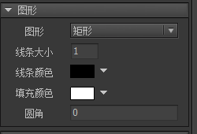

图形
FairyGUI支持生成简单的图形。 点击侧工具栏的按钮生成一个图形。
实例属性

图形选择形状为矩形、圆形或者“无”。“无”表示这是一个空的图形，他不消耗任何显示资源，通常用作一个占位的用途。详细可见下面的介绍。线条大小形状的描边大小。0则表示不描边。线条颜色形状的描边颜色。填充颜色形状的填充颜色。如果你希望绘制中空的图形，那把填充颜色的透明度设置为0即可。圆角一个整数或者4个用逗号分隔的整数。例如“4”，表示矩形的四个角均为半径为4的圆角。例如“2,1,1,4”，则指定了每个角的半径。Unity、Starling版本不支持圆角的设置，如果你仍然希望使用圆角矩形，可以在右键菜单里点击“转换为位图”
GGraph
图形支持动态创建，动态创建图形需要注意一定要设置图形的大小，否则显示不出来。例如：
|
前面提到，空白的图形可以用作一个占位的用途，运行中可能用其他对象替换这个空白图形。FairyGUI的显示对象与原生显示对象混合使用时就需要用到这种空白的图形。
举例：现在要在UI中放置入一个原生的对象aSprite，则可以在适当位置放入一个空白的图形，假设对象为holder，那么代码里可以这样写：
|
这样就把aSprite放到了holder所在的位置和深度上。 通过这样的办法，任何原生显示对象都可以轻松插入到FairyGUI的显示列表中。
如果SetNativeObject被重复调用，则前一个设置对象被销毁，插入新的对象。
通过GGraph.shape属性可以获得原生矢量绘制的接口类。特别说明的是，Unity平台没有矢量绘制引擎，因此目前只提供了绘制矩形、圆形和多边形。以下是Unity里运用GGraph对象的一些技巧：
|
再次提醒，如果图形是动态创建的，记得设置图形的大小。
发现错误或想贡献文档?
在 Github 上编辑此文档!